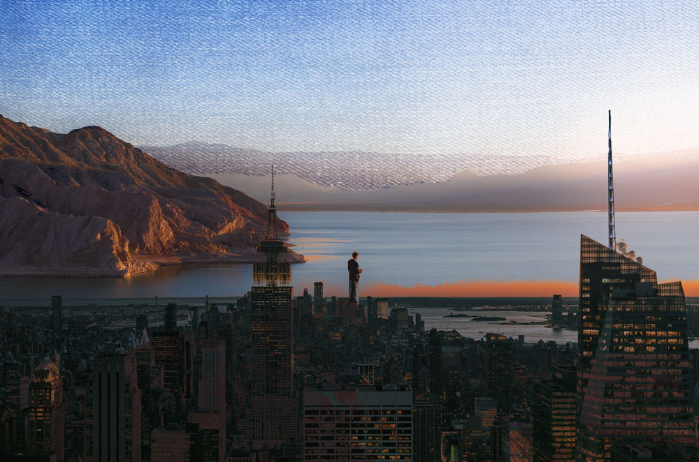

This is the secend photomonatge in which I also used both mask and blending mode. I had 3 photos, One with a person on top of the mountains overlooking the water, a denims pattern, and the landscape of the city. I used to city landscape to replace to mountain in which the person was standing on. I used the darker color blending mode to create a somewhat pressed ink look. I also used mask layer to get rid of the skyline in the city photo. I overlapped the denim pattern over the sky and used a mask layer so it wouldn't overlap the mountains. Overall I think it has a cut and paste magazine look that I think looks cute.
